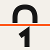

hourly
Wordmark and display, Bricolage Grotesque 700, tracking tight.

Palette
enamel
black
paper
signal
ink-2
ink-3
red
green
Data type
$2.59DM Mono 400 and 500. Last digit orange when it is the one moving.
Body
Pick a chip, get a firm price, execute. Backed in USDC, settled on the oracle print.
Controls
Spacing and borders
4, 8, 12, 16, 24, 40, 64. Radius 0. Border 2px, rule 1px. No shadow.